El último aliento
El último aliento is a mobile narrative-driven game, with an endless runner mechanic, developed in 48 hours for the Global Game Jam 2025. The story follows an explorer embarking on a maritime expedition, hoping to return soon to confess their love to a special someone. However, the journey takes an unexpected turn, and now the player must navigate the ocean's depths to retrieve the explorer's final breath, which contains their heartfelt message. This game explores themes of love, loss, and the connection between life and death in a poignant and atmospheric setting.
Project Details
▼Project Type: Narrative-driven Adventure (Game Jam)
Game Jam: Global Game Jam 2025
Team size: 6
➥Isabella Garcia Merlano
➥Alejandra Urueña
➥Ana María Contreras
➥Santiago Gallo Beltran
➥Daniel Florez
➥Haruyoshie Ecima
➥Julian González
Roles: Project Manager, Artist, Game and narrative designer
Software Used: Unity 3D
Duration: January 24th - 26th 2025
Key Contributions and Responsabilities
▼- Project Management: Oversaw the organization of the team, establishing clear planning to ensure that all tasks were completed within the allotted time. I fostered collaboration and maintained team motivation, ensuring that all members could work efficiently and together to meet project objectives.
- Art Direction and design: Led the creation of the visual style, defining the aesthetic approach to reflect the melancholic and atmospheric theme of the game. Designed key art assets, including characters and environments, ensuring that the visuals aligned with the emotional narrative.
- Narrative design: Developed the core storyline, focusing on the emotional depth of the protagonist’s journey. Crafted the story beats and the protagonist's inner conflict, intertwining it with the gameplay to deliver a meaningful emotional experience for the player.
- Game design: Designed the game mechanics that support the narrative, such as the exploration of the ocean depths and the retrieval of the explorer’s final breath. Focused on creating a compelling gameplay loop that enhanced the player's emotional connection to the story.
Gameplay Components
▼- Bubble Journey Mechanic: The game features a unique "endless runner" mechanic, where the player controls a bubble representing the protagonist's desire to deliver their message of love. The bubble continuously moves upwards, guided by the player’s taps that shift its direction in response to a moving arrow. The player must navigate through marine creatures and avoid shrinking the bubble, while also managing its gravity to prevent it from falling. If the bubble collides with obstacles or loses control, the player loses.
- Story Mode and Replayable Endless Mode: In the story mode, the player experiences the narrative through a series of events, where the story progresses with each level and key moments are revealed as the player advances. The game culminates in an emotional ending, tying the gameplay to the protagonist's final message. And in the record mode, the goal is to achieve the highest score possible by navigating the bubble as long as possible. The score is based on distance and the player's ability to avoid obstacles, encouraging replayability and skill improvement.
Reflection and Learning
▼El ultimo aliento allowed me to explore how to combine engaging gameplay mechanics with an emotional narrative in a limited time frame. The bubble mechanic, which directly ties into the protagonist’s desire to deliver a message of love, helped me deepen my understanding of how gameplay can reflect story themes. I also gained valuable experience in balancing narrative progression with interactive gameplay, ensuring the player’s actions felt meaningful while still advancing the story. The collaboration with a talented team of artists, developers, and sound designers further enhanced my skills in coordinating multiple aspects of game development under time constraints. This project reinforced the importance of creating immersive experiences that evoke strong emotional connections with players.
 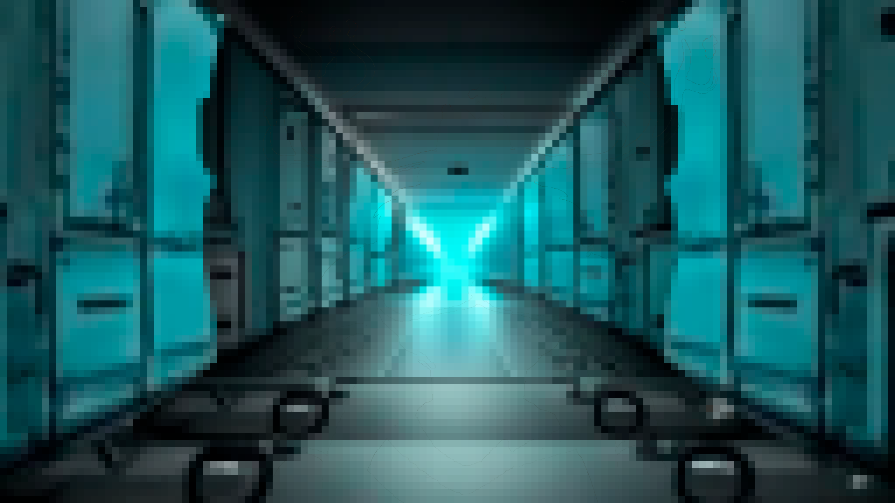
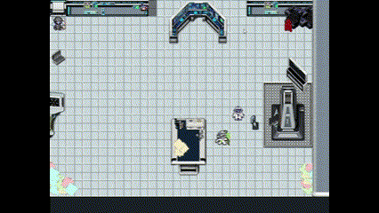
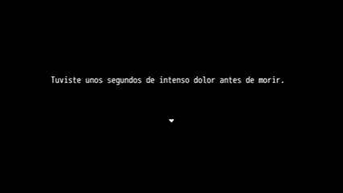
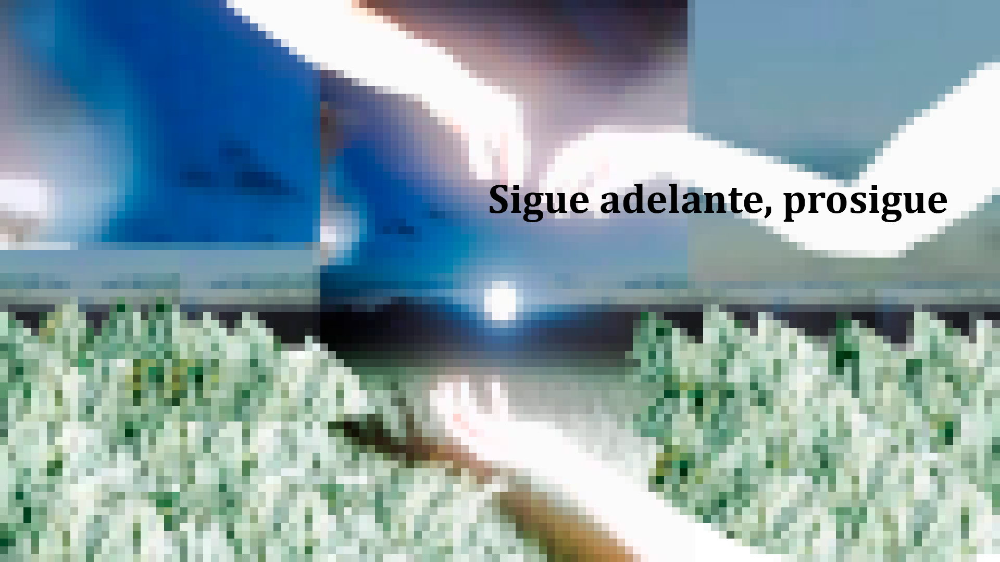
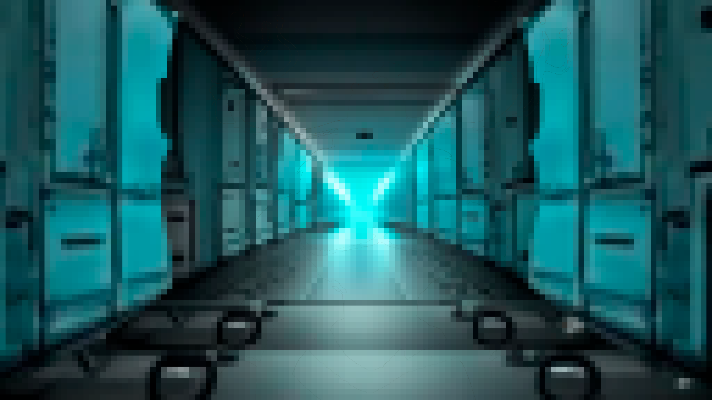
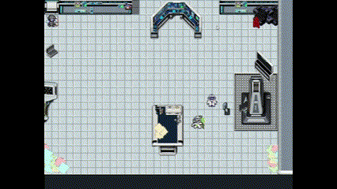
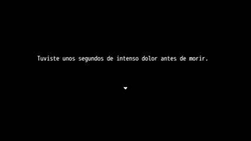
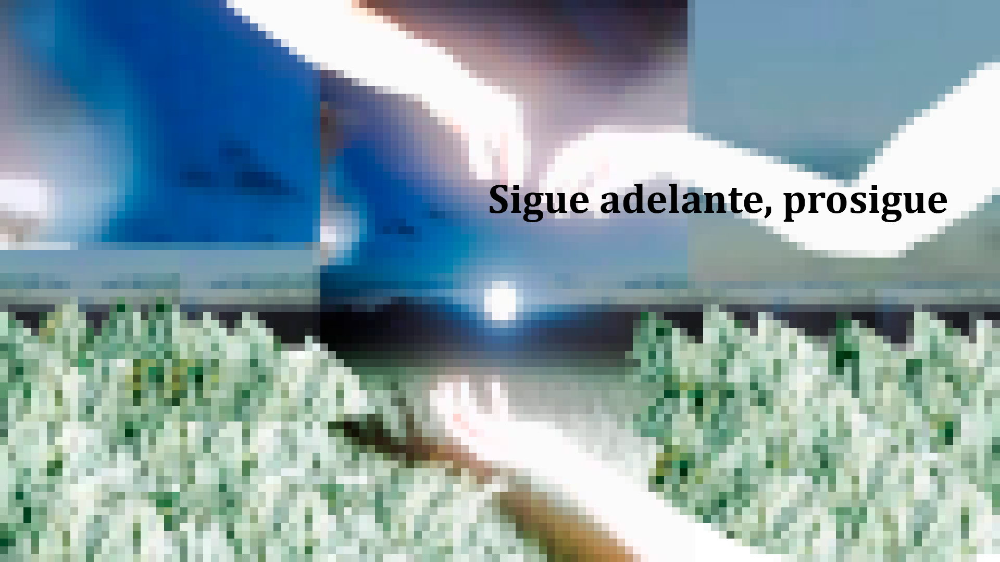

 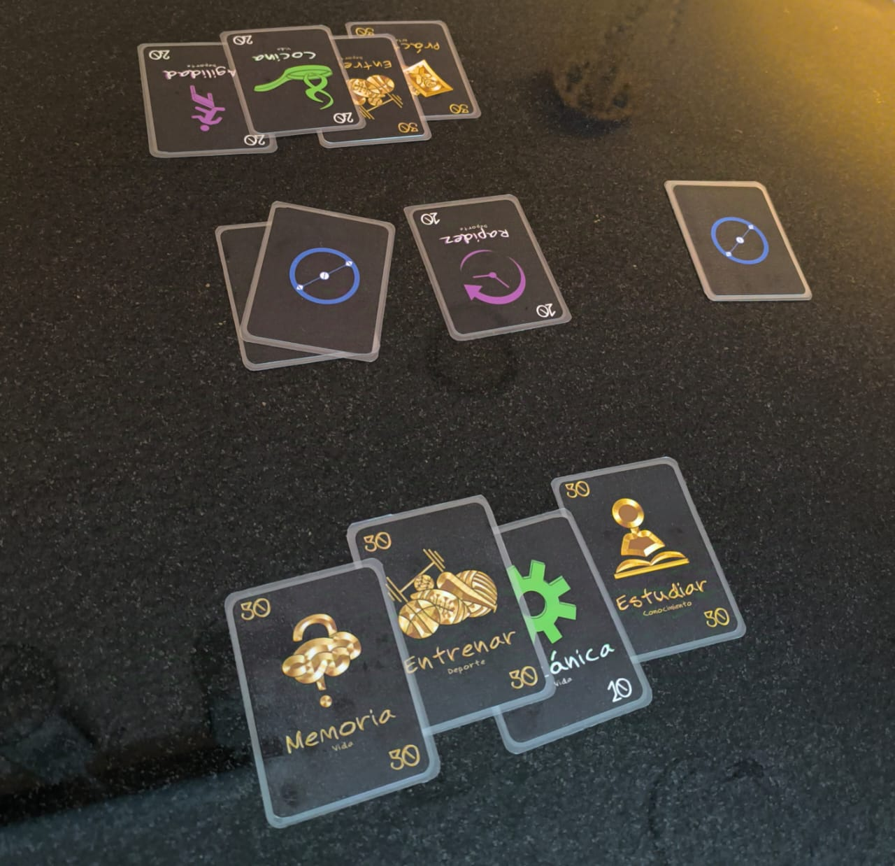
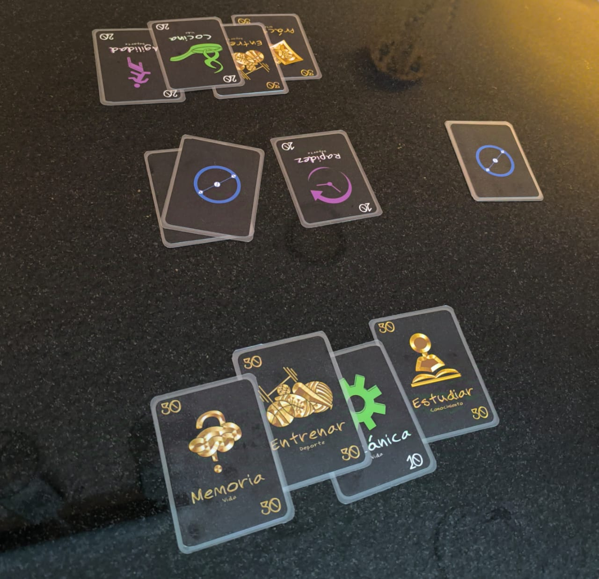

 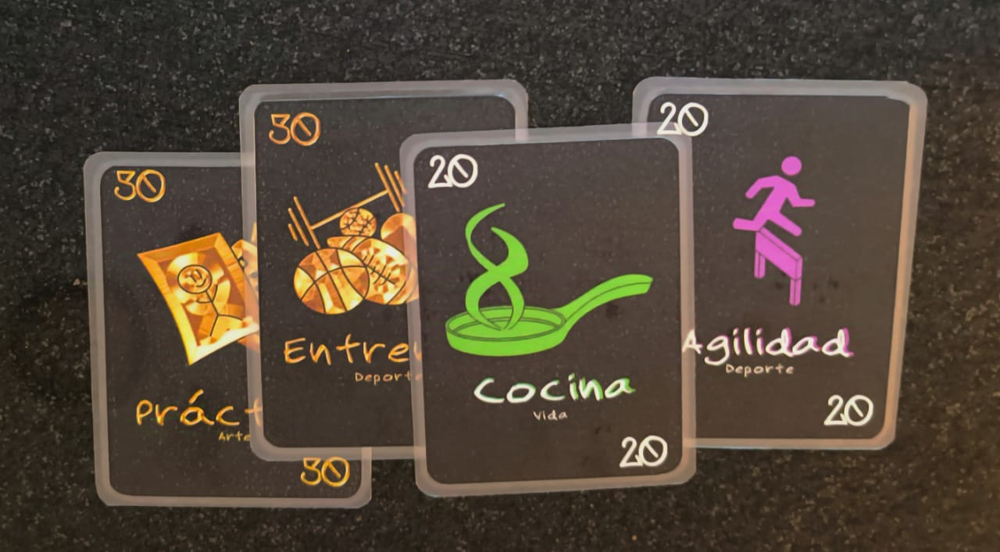
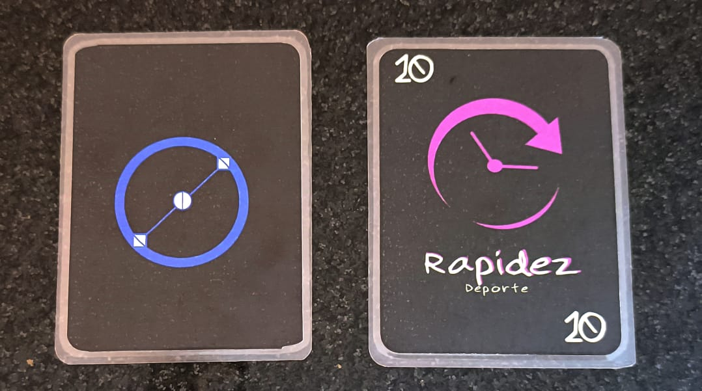
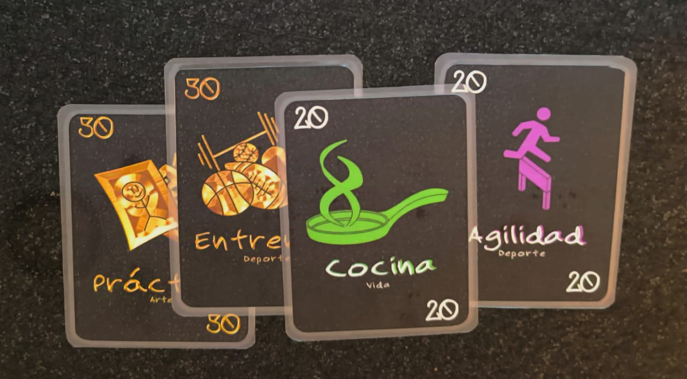
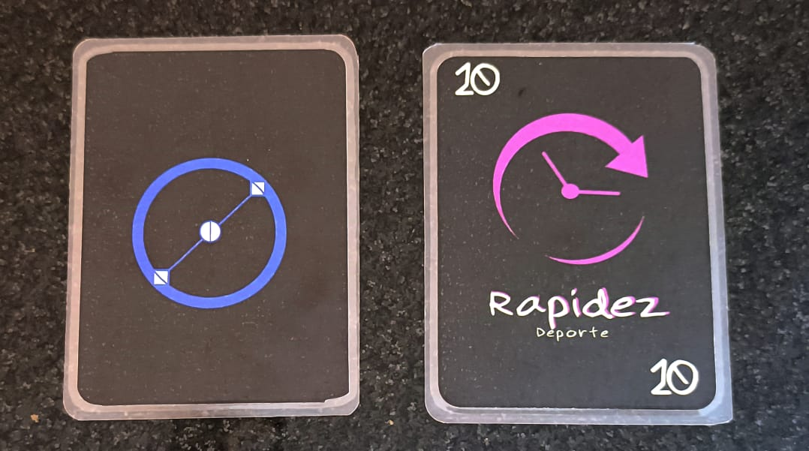
 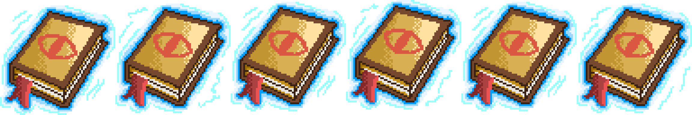
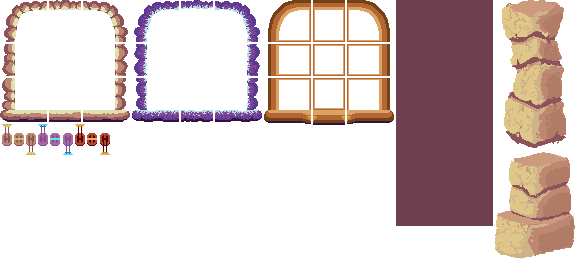
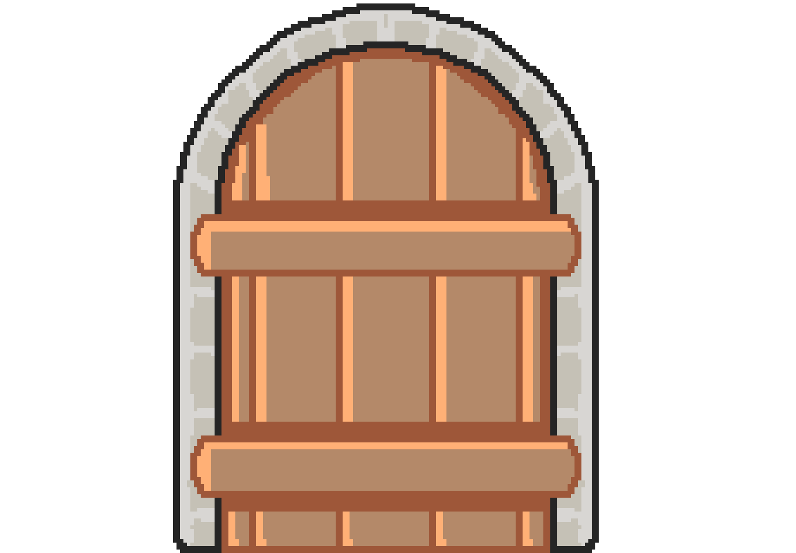
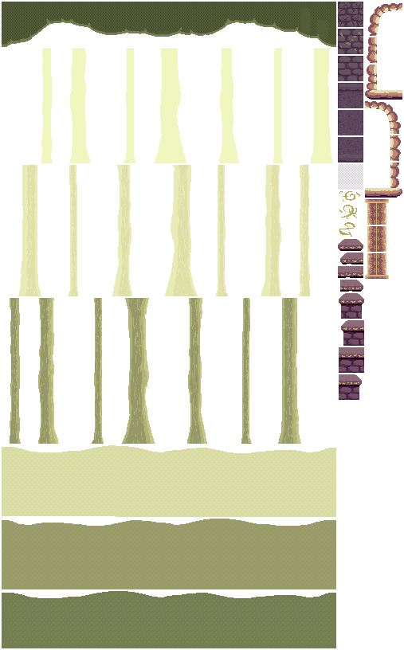
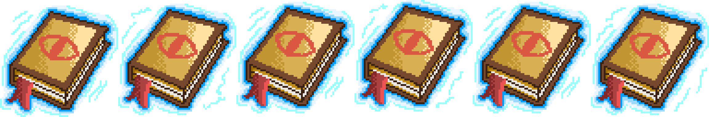
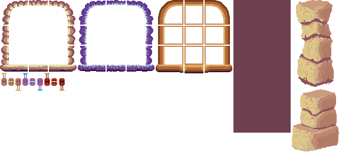
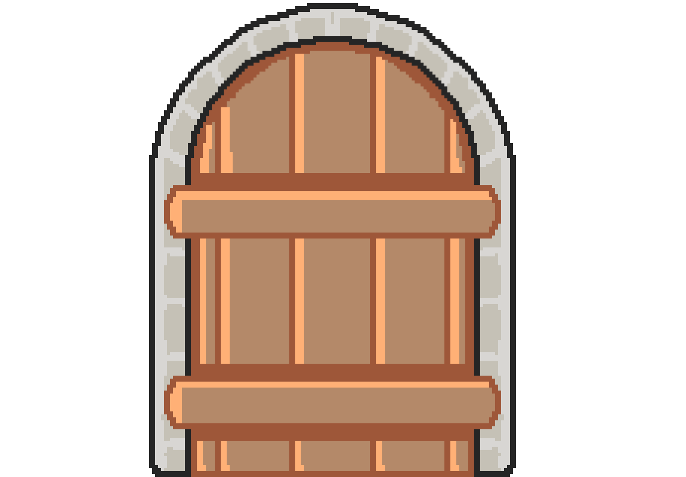
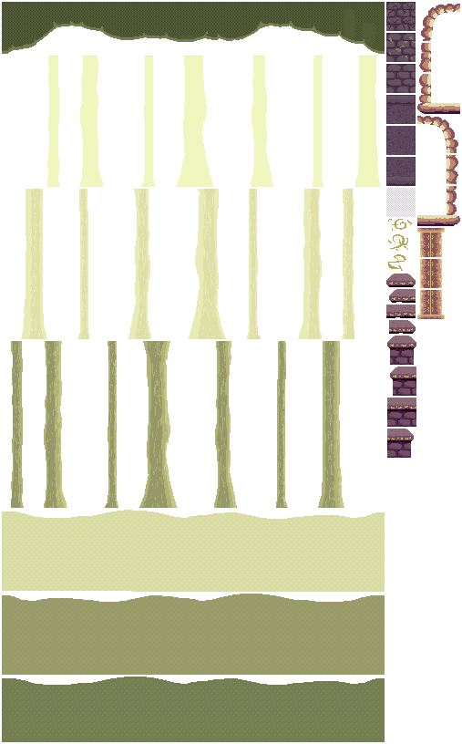